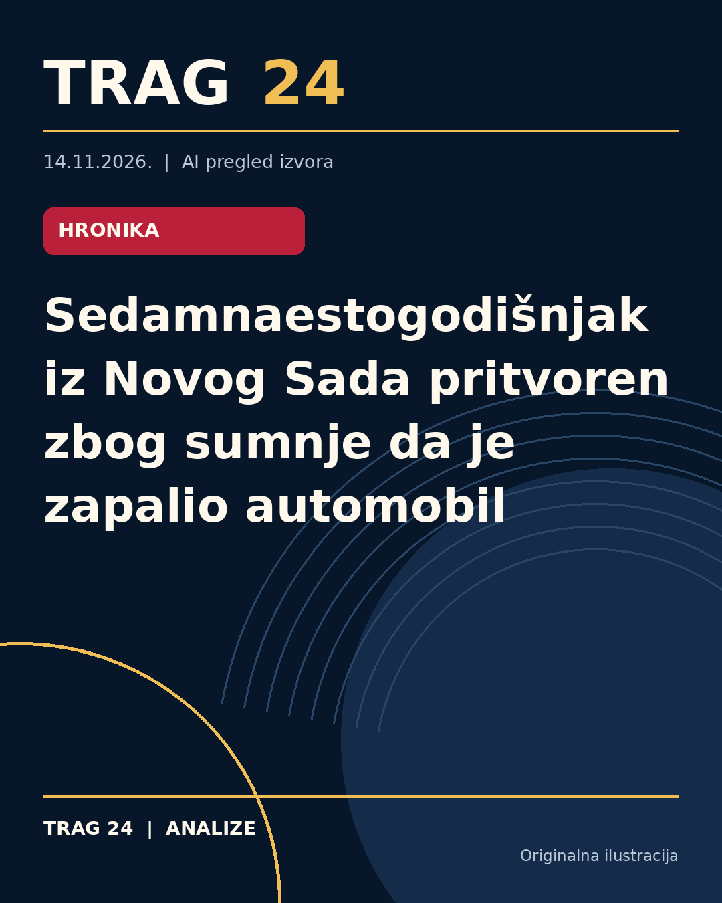

Sedamnaestogodišnjak iz Novog Sada pritvoren zbog sumnje da je zapalio automobil

ŠTA SE DOGODILO
Sedamnaestogodišnjak iz Novog Sada osumnjičen je da je 20. oktobra zapalio jedan automobil na Bulevaru patrijarha Pavla, zbog čega se požar proširio i na još dva vozila i jedan lokal.
HRONOLOGIJA
Policija je nakon prijave o požaru sprovela intenzivnu istragu i zajedno sa Tužilaštvom privela osumnjičenog. Nakon saslušanja, sud je odredio pritvor do 30 dana za maloletnika.
ŠTA NAVODE IZVORI
Prema informacijama saopštenim od strane Policijske uprave i Ministarstva unutrašnjih poslova, osumnjičeni je uhapšen zbog sumnje da je izvršio krivično delo izazivanja opšte opasnosti. Insajder navodi tačnu lokaciju događaja i detalje o radu policije tokom istrage, dok Danas naglašava pravne radnje koje su usledile nakon hapšenja.
ŠTA JE POTVRĐENO
Potvrđeno je da je u Novom Sadu uhapšen sedamnaestogodišnjak zbog sumnje da je izazvao požar što je dovelo do paljenja tri automobila i jednog lokala. Sud mu je odredio pritvor do 30 dana, a policija je saopštila da je u pitanju krivično delo izazivanje opšte opasnosti.
ŠTA NIJE POTVRĐENO
Nije potvrđeno zbog čega je osumnjičeni zapalio automobile, kao i eventualne dodatne motive ili okolnosti koje su dovele do požara. Takođe, nisu poznati detalji o toku istrage osim činjenice da je osumnjičeni priveden i pritvoren.
ŠTA OSTАJE OTVORENO: Ostaje nejasno kako je sedamnaestogodišnjak tačno izazvao požar i da li su u aferi učestvovali drugi akteri. Takođe, nije poznato kada će biti održano suđenje i kako će se razvijati dalji postupak.
Izvori
- https://www.danas.rs/vesti/drustvo/novi-sad-pritvor-za-maloletnika-zbog-sumnje-da-je-zapalio-auto/
- https://insajder.net/prenosimo/uhapsen-sedamnaestogodisnjak-zbog-sumnje-da-je-zapalio-automobil-u-novom-sadu-odreden-mu-pritvor-do-30-dana
Ova analiza je pripremljena uz pomoć veštačke inteligencije na osnovu javno dostupnih izvora. Navodi izvora nisu nužno nezavisno potvrđeni.